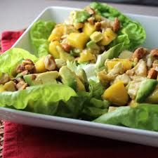

Chicken, Avocado and Mango Salad

This is a colorful and very tasty mix of chicken, mangos, and avocados in a
spicy lime dressing.
Perfect for hot summers, where you just want something light and simple to enjoy. Perfect
for the sides of grilled food.
Ingredients
- 2 tablespoons brown sugar
- ¼ cup water
- ⅓ cup lime juice
- ½ cup chili garlic sauce
- 4 cups shredded, cooked chicken
- 2 medium mangos - peeled, seeded and diced
Steps
- In a saucepan over medium-high heat, stir together the brown sugar and water. Bring to
a boil, then pour into a medium bowl. Stir in the garlic chili sauce and lime juice. Set
the dressing aside.
- In a large bowl, toss together the chicken, mangos and avocados. Arrange the spring salad
mix on serving plates, then top with a few spoonfuls of the chicken mixture. Pour
dressing over the top.